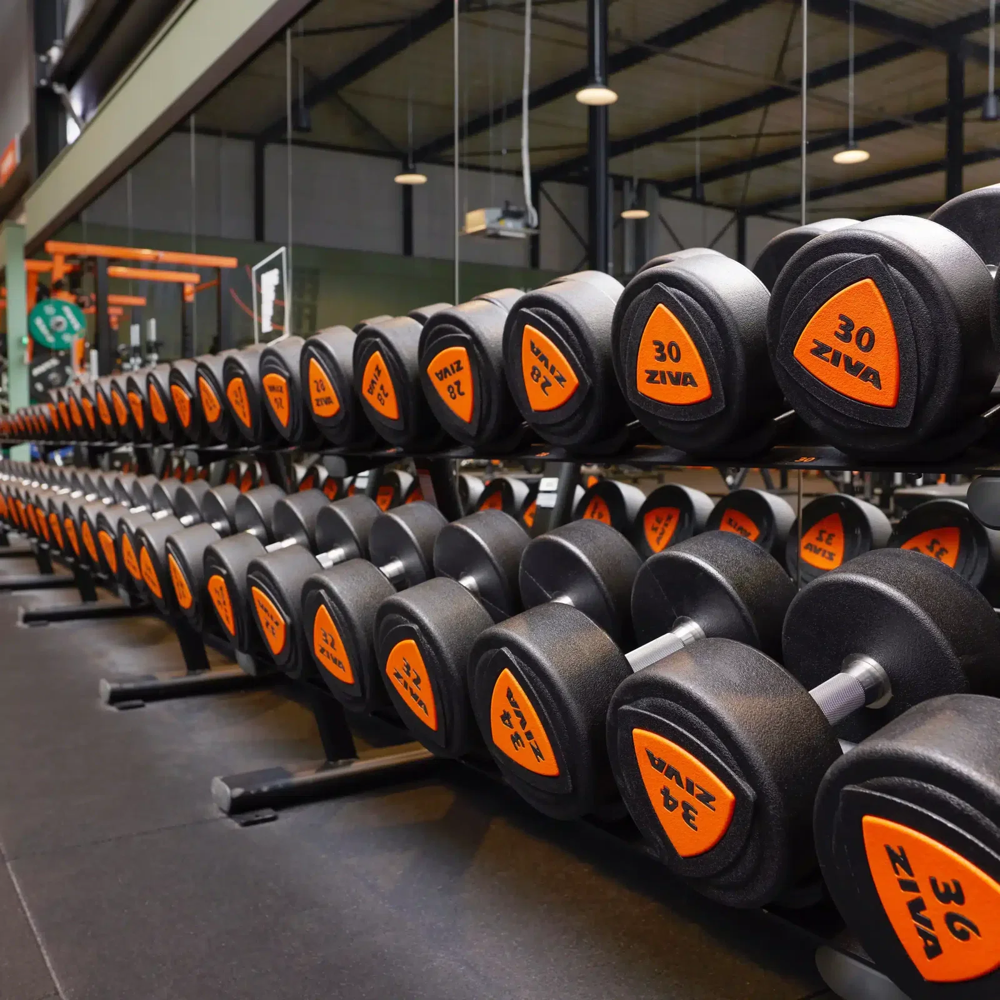
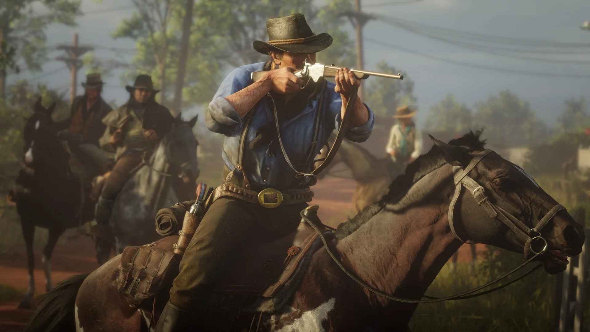
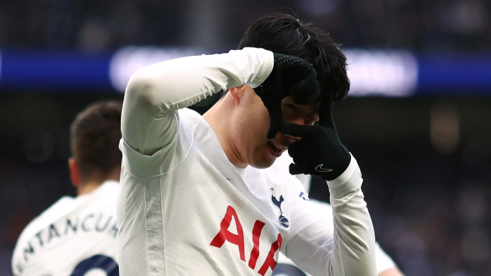

Fitness
Ik ga elke week 4-5 keer naar deBasic Fit.
Niets is beter dan gewichten heffen met een paar goede vrienden rondom je die dezelfde passie delen.

Ik ga elke week 4-5 keer naar deBasic Fit.
Niets is beter dan gewichten heffen met een paar goede vrienden rondom je die dezelfde passie delen.

Ik speel regelmatig online games met vrienden of singleplayer games.
Ik verzamel al mijn games opSteam.

Voetbal is iets dat ik zelf niet beoefen, maar het boeit me enorm.
Ik bekijk wedstrijden en statistieken via Sofascore.
